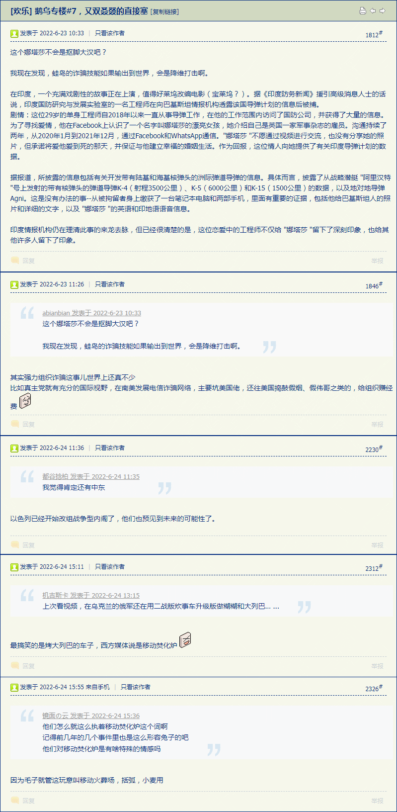
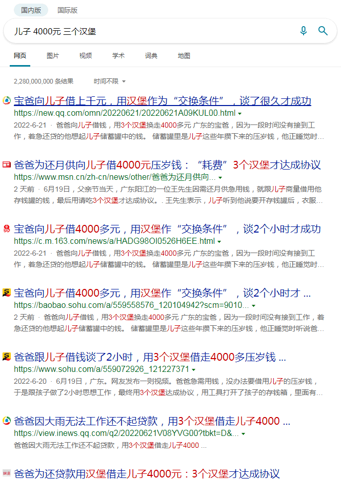
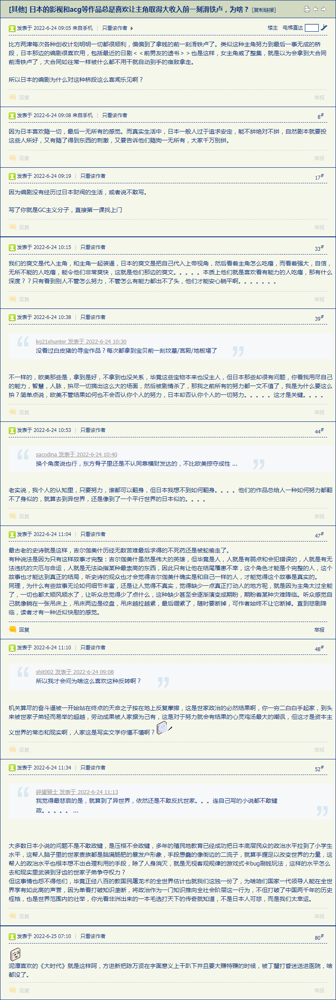
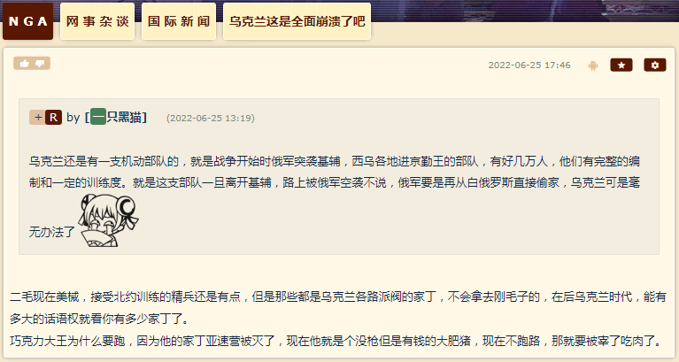
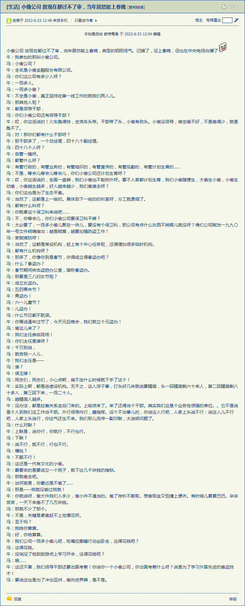
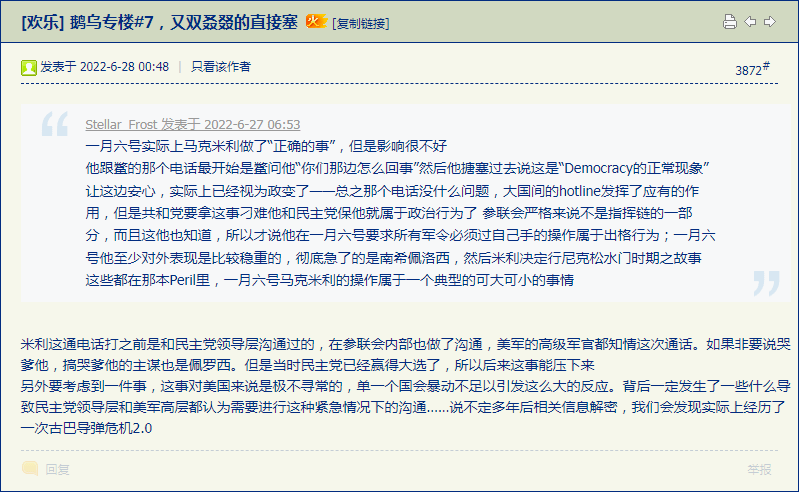

fanhan-inside
素材：《法国面包法令，中国是否也该给出相关政策》
摘要：
法国面包法令
法国人对于面包的尊重不仅是体现在日常生活中，同样体现在法律的领域。
1993年9月13号推出了关于面包的法令。其中规范关于“法国传统面包”，“发酵种面包 pain au levain”的定义。将“面包法令 le decret pain” 的原文要点记述如下。
1） 法国传统面包：
pains de tradition français
pains traditionnels français
pains traditionnels de France
以上名称，或是这些排列组合的名称，在制作过程中，不包含冷冻作业，不使用添加物，仅用制作面包用的面粉，饮用水，食用盐，制作面包用的酵母以及发酵种levain，以及作为辅助剂的黄豆粉，大豆粉，粉末麦芽，面筋，作为技术辅助剂的淀粉酶，才允许添加于面包中。
2) 发酵种面包 pain au levain
在法国1993年“面包法令 le decret pain”之前，1977年的“法国面包习惯法 le recueil des pain en France ”中，曾有发酵种面包 pain de levain 的定义。虽然这并不是法令，但却成为取缔的标准，这个习惯法中，称之为发酵种面包 pain au
levain，指的是仅使用粉类，水，盐，发酵种levain，完全不使用酵母制作的面包。但在1993年的“面包法令 le decret pain”当中。在正式揉合时添加0.2%以下的新鲜酵母时被认可的。
“发酵种面包 pain au levain”的定义在“面包法令 le decret pain”的第三章，第四章。以下引用。
第三章：仅利用下个章节第四章定义的发酵种levain制作的面包，PH值最高4.3，柔软内侧的醋酸含量最低为900ppm。
或许大家会觉得满足这些基准，酸味会很强，但这个数据只是标示出以乳酸菌与酵母共生发酵种levain的条件。
第四章：发酵种levain是面粉和裸麦粉，或是此两种粉之一和饮用水混拌的面团，也有添加食盐的情况，引起酸性的自然发酵。发酵种levain的目的，是使面团能确实产生发酵，发酵种levain的微生物，主要是乳酸菌和酵母。
关于发酵种，即使用葡萄干等水果，蔬菜等起种的发酵种levain来烘焙面包，在法国也不能以“发酵种面包 pain au levain”的名称贩卖。另外从上述文件中可知，日本的酒种，啤酒花种，以酵母增值为主，在法国也不能冠以发酵种之名。
更甚者，
认可在正式揉合时，添加0.2%（相对于面粉总量）以下的面包制作用新鲜酵母，贩售时，必须在最终成果上标示“发酵种”的比例。若占25%以上时，必须明确记载发酵种levain的材料，25%以下时，只需要标示添加物即可。
有如此之规定。以上“发酵种面包pain au levain”的定义，在布鲁塞尔的EU委员会中被视为过于严格，现在仅在法国国内实行此法令。
而《德国啤酒纯净法》在1516年就颁布了，此处不再重复。
于是，无论是《设定集》《异闻录》，都可以利用这些现实素材。在《设定集》当中当然是照搬不误，而《异闻录》也很简单，背景就是砥砺奋进十年来的局面：
邦昌時代・背景
当前「以德治国」党在野而「依法治国」党执政，党内「法」「术」「势」三大派阀内斗频繁，对外表现的团结形象只有共识「五民主义吾党所宗」而已。
幕后黑手「太上国度」或曰「可萨汗国大呼拉尔常务委员会」当中的斗争，与「实体政党」并不完全重合，人民群众从现实中观察到的表现只有「六大门派已渐大同」。
前情提要：
还是按照行政级别从上往下捋的原则，「依法治国」根据地十步一岗五步一哨夜不闭户路不拾遗兲子脚下首善之区国际一流和谐宜居之都的一把手二把手与对岸宝岛台湾统帅副统帅壹壹对应的事情写过了，而「以德治国」根据地国际化大都市一把手大野某的祠堂已经在多处出现导致读者有审美疲劳，于是浓墨重彩添油加醋的情节，应该集中在二把手「龚」字头帐号之上。
喏，划重点了划重点了，今后搜集情报的时候请特别留意。
fanhan-inside
补充情报兼素材：
范某截图备份于此

重点有俩，都与剧情乃至现实有紧密关系：
- 清真骗子
- 移动焚化炉
对于「清真骗子」，个人亲身经历的第一手材料在之前的谈笑风生当中提及好多次了，就是「骆驼奶与蚕丝被」的典故，不仅有专门的内容，还有截图上面的标注。
在那2021年3月3日，家贼进门口称通过考试获得一年「骆驼奶」供应，要求提供至少××××元现金支持「多多益善，××××、××××也行啊」，并有赠品「蚕丝被」。注：骆驼奶家贼喝，蚕丝被则送给我用。我取款后给了，回馈是清真食品若干罐。后来问起来「骆驼奶喝了么」，家贼说「考虑一下不订了」，再问「那钱呢」，家贼不说话，总之就是「为组织提供资金」而已，借口可以随便编。
自打国会山纵火案之后家贼就明显烦躁，1月5日就上门索要×××××元，理由没写进日记，应该是「你别管，爹有用」之类托词，我给了，回馈是清真食品若干罐。后来还有好几次。但我一直放着没吃，因为「吃人嘴短」，直到家贼上门「你不吃是吧，爹拿走了」打包全带走。
再往后还有好几次，直到数额超过我的存款余额并且理由过于奇葩，才拒绝。然后家贼脸色就变了，或者说翻脸了，把脸一抹显出本相了，不屑于隐瞒幽州外景片场摄影棚的充沛恶意了。
有一天我正在馆子里酗酒，家贼过来拿了两袋面包，说「你一袋我一袋」，然后打开一袋当面吃了一个，拎着袋子走了。我在酗酒完毕结账之后，把另外一袋带回家，上网一看，各种屎绿屎黄舆论显示「当你只想要一块面包的时候，老板会认为你不值一块面包」。
哦，原来导演给家贼说戏了吖，不是平铺直叙而是通过肢体语言和道具，对摄像头后的观众朋友与窃听器后的听众朋友造成心理暗示，好比那一路小跑追公交车与「五十块钱包月的破鞋」送货上门一般。
还有一天我还在馆子里酗酒，家贼又过来了，这次是拿着过去我上班时缴纳五险一金存折以及大批收据存根让我看，我看了问啥意思，家贼不说话，就是让我看。等到酗酒完毕结账回家之后，上网一看，九省通衢の煎蛋舆论显示「傻哔领导（以及周边马屁精）终于滚蛋了，现在项目正缺人，人事想把以前的同事叫回来，但是待遇与十年前离职时一样」。
哦，原来导演又给家贼说戏了吖，不是平铺直叙而是通过肢体语言和道具，对摄像头后的观众朋友与窃听器后的听众朋友造成心理暗示，好比那一路小跑追公交车与「五十块钱包月的破鞋」送货上门一般。
至于「物美超市出品的纱布清蒸包子」说过了，就在2020年春节，一口绿色电锅，还提醒我可以「垫着纱布蒸烧饼」，但没出现「伞兵」或者「（1小时22分钟斩首演员の）VDV」字眼，还有「脱脂纱布口罩」。当时我就知道咋回事，但看家贼还在装蒜，也不能说穿（否则又是一脸诚恳在摄像头前表演「你就这么跟爹说话」「这是给你送吃的来了」「好心当成驴肝肺」），于是已经化用进《异闻录》当中去了也。
再往后，家贼就傻笑着进门，趁我喝多了回来了正在解手的时候拿走手机，过几天过来还装蒜「我没拿！」「你报警啊！」，再过几天把手机拿回来，里面手机卡没了。然后11月2日人民警察上门「你父亲是不是用你的名义借了好多钱」，再然后11月3日人民警察通知家贼「以生命严守党的机密」。
问题就在于，这帮清真骗子到底是咋个站队？背后是沙特还是伊朗？按照爆料当中「真主党」的描述应该是伊朗。但是在「喀布尔民主铁拳」还有塔利班高层干部访问我中华兲嘲上国录制视频全网同步上映的时候，就有「走私军火、毒品、人口」的世家子弟放话了，不仅巴基斯坦拿着沙特绿钱支持塔利班，境内也有关系户大搞特搞诈骗，与缅甸台湾的骗子，以及遍布全国的「传销村」「制毒村」是不是同一帮人，那就不好说了。
再来回顾，一串字母胡乱混合的帐号一边追着我喷「傻哔绿人」一边炒作「傻哔绿人董存瑞发动自杀式恐怖袭击，反政府武装传播极端思想」「傻哔绿人邓世昌裹胁全舰官兵发动自杀式恐怖袭击未果沦为笑柄，极端组织已渗透至我军高层」，再想起2019年10月家贼进门「阅兵式你看了没有？咱国家今非昔比啦」，不由得有个疑问：
这时候（2021-7-7）家贼已经撕下伪装一段时间了，我在完成迄今为止《设定集》第二辑草稿最后一篇〈辛巴达的名单〉之后，正在进行一连串准备工作，为下一阶段铺垫。所以我可以不惮以最大的恶意揣测，在2019年国庆「阅兵式」当时，伊斯兰极端组织还就是「渗透至我军高层」，所以家贼（以及其所属清真骗子帮派团伙）才那么兴高采烈。
补充相关情报与「伪装成社会新闻的情报」：
范某截图备份于此

fanhan-inside
补充情报兼素材：
范某截图备份于此

相关剧情：
邦昌時代・本文
“现在污衣派领导也一身光鲜了”，柴守宫回忆案例，“网上那些炒作国难家难到处募捐的，众筹集资的，看上去都挺体面是吧？采生折割到处扯着老百姓化缘的才上不了台面”。
“这老流氓就是跟不上时代的历史唯物主义の尘埃”，柴禾妞问，“那怎么还能养出这种儿子”。
“祖国山河一片红之后，丐帮传统行业已经不流行了，有手有脚的都特么能找份工作，高就业率低工资”，郭春海解释，“但是行动纲领并没变，穷养儿富养女，按照斯巴达政治规矩和组织纪律，尽可能让儿子饥寒交迫，逼着他为了谋生而坑蒙拐骗偷”。
“你说老流氓把目标自己买的生活必需品都拿走，送过来假冒伪劣的次品，就是这个目的？”柴禾妞问，“可是目标职业不是鸡鸣狗盗吖，上班当社畜也得西装革履，最起码不能蓬头垢面吧？”
“这叫‘余粮收集制’，只让目标维持生活，故意使他颠倒破费，不容他身边积攒一些”，柴守宫解释，“目标一旦‘无为守穷贱’了开始努力赚钱，赚多少就拿走多少”。
“我想通了，政治学到初一还不够”，柴禾妞恍然大悟，“如果是被外人骗了抢了敲诈勒索了，就会出现‘奴隶破坏生产工具’的情况，不利于生产力的发展。只有冒充家人假惺惺的打着‘也是为了你好’‘家里替你存着’的借口，才能麻痹目标，一直骗到目标年满34岁老了不中用了在结构性优化大背景下作为平庸员工向社会输出为止”。
“就是这样”，郭春海叹气，“本来的计划当中，过一阵老头就会一把鼻涕一把泪的过来，说爹上当了，给你攒着买房结婚的钱，都被骗走了”。
⸺《异闻录》〔022〕四渡汉水出奇兵与百万雄师撵救星
以及由于连载告一段落尚未放入正文的相关剧情：
邦昌時代・別題
“给你看几段视频”，郭春海说着打开指定目录，“你就知道楼下那小子干啥去了”。
第一段
“儿砸！”老流氓故作惊讶，“你怎么了？”
“没啥，把眼珠子抠出来而已，准备挂房梁上等着看你吹成一朵花的那位怎么照顾我呢”，魏则浦故作轻松，“心血成果搞定了，现在我需要照顾了”。
“唔，之前你可是一直百般推脱吖”，老流氓喜形于色，但是口气仍然沉重，“不过现在人家姑娘可能不愿意了”。
“之前我说能自己照顾自己，你来就是添乱”，魏则浦口气沉重，“你总是不信”。
“爹也是为了你好……唔，还在流血”，老流氓扶起魏则浦，“先去医院处理一下吧”。
第二段
室内空荡荡的。魏则浦被搀到沙发坐下，按照记忆中的布局伸手一扶，却摸了空。
“书柜哪儿去了？”魏则浦伸手到处摸，啥也没摸到。
“反正今后你也用不着了，怕你伤心”，老流氓亲切的说，“爹帮你给卖了”。
“卖了？！”魏则浦大惊，然后颓丧，“卖就卖了吧”。
“还有计算机，手机”，老流氓补充，“反正你也用不着了，爹拿走了”。
“今后我啥也不能干了是吧？”魏则浦有些后悔。
“是爹不好，以前经常来烦你，今后不会了”，老流氓的沉痛语气掩盖不住笑容满面，“你啥也甭想，好好休息吧，一天三顿饭有人送”。
第三段
“爹，你那边咋样了？”一看就是智能手机视频通话录像，屏幕上一张陌生面孔招呼老流氓。
“搞定了”，老流氓回答，“儿砸你那边咋样了？”
“已经考上研究生了”，陌生面孔回答，“一切顺利”。
“行”，老流氓欣慰的点头，“你啥时候回来，咱爷儿俩好好聊聊”。
看完了之后，柴禾妞还是莫名其妙，“这人是谁？从来没见过”。
“以后的魏则浦就是他了”，郭春海解释，“老流氓的亲生儿子”。
“原来那个呢？”经过培训的柴禾妞已经对于李鬼变李逵套路见怪不怪了，之前处理过备份帐号的资料也不少，今天头一次见到活人形象。
“趁这次发大水，扔河里给淹死了”，郭春海解释，“报个无名尸体”。
“逼疯了就这下场”，柴禾妞感慨，“可能这傻哔还以为忍辱负重废寝忘食呕心沥血做个项目谈好分成就能保下半辈子平安呢”。
“是啊，纯傻哔，他也不想想为啥谈项目一路顺风大开绿灯还条件优越”，郭春海评价，“现在所有证件都改过来了，学籍档案上面的照片都换过了”。
“那这个冒牌货……现在是正牌了”，柴禾妞问，“以前都在干嘛？”
“啥都能干，包括为非作歹”，郭春海解释，“条子那里的卷宗上，丫犯的那些事，指纹也好体液证据也好都清空了，无头案等着找替死鬼吧”。
“可是在视频通话里面只字未提”，柴禾妞刚想问就想通了，“当然不会提，等着父子团聚的时候面谈呢”。
“现在举头三尺有棱镜，拿着手机联系方便多了，二十多年前连固定电话都挺稀罕”，郭春海话里有话，“如果那时候老流氓想儿子了，只能亲自去什么地方见一面，或者等儿子过来”。
“我好像有点明白为啥鲜卑丐帮能把持国际一流和谐宜居之都了”，柴禾妞似懂非懂，“召之即来挥之即去的上百万幽州人民群众，这份家底也不是那么容易攒起来的”。
⸺《异闻录》题外话〔33〕：《创世纪》一言既出，《启示录》驷马难追
个人亲身经历已经化用进去了，只不过我是一直忍到去年家贼要不到钱主动翻脸撕下伪装，这才暴露出与我有关的「贼窝」或曰《楚门の世界》摄影棚一角的演职人员，包括但不限于古拉格北里军休所出没的哥布林，以及已经被大同文盲老太太于2002-2003年间策反的古拉格南里「传销村」「制毒村」那帮伪装成居民的村办厂农民工。
关于「清真骗子」，则有另外的第一手材料。就在我这些年下馆子酗酒的时候，经常看见有顾客（头上没戴帽子也没有民族服饰，打扮与汉族无异）进门，一屁股坐下「先来一瓶烈酒（不打广告此处省略名称）！」然后解释「这酒劲大还不上头」，看菜谱的时候就皱起眉头「我是回民，忌讳这个，忌讳那个」，看一眼厨房「怎么和猪肉用一口锅？」，然后摔下菜谱走了。
像这位顾客一样的我中华兲嘲上国权威机构颁发的身份证户口本认证的「回民」绝不在少数，有关部门临时工可以通过外交渠道询问沙特伊朗嘛，这种人到底是不是穆斯林？不是的话，估计就与家贼所属的「清真犯罪集团」有关了。
从家贼经历观察，这帮人已经在北京扎根七十余年，在人脉协助下不知伪造了多少户口本安插了多少间谍特务卧底，拐卖了包括但不限于我在内的不知道多少婴儿并训练教唆其从事犯罪，还掀起了1976、1989两次「起义」，以期货开国元勋自诩憧憬杀去偏殿夺了鸟位……未果沦为笑柄。
fanhan-inside
补充情报兼素材：
范某截图备份于此


前情提要：
相关剧情：
邦昌時代・本文
“我看你平时也不怎么玩游戏，反而对其中猫腻门儿清”，柴禾妞奇怪，“网上多少人抱怨，被堵在家里没啥娱乐，只能接着给谁充值了什么的”。
“习惯了”，郭春海解释，“以前在家的时候，无论是学习还是娱乐，只要持续一段时间，通常都是十几分钟左右，立刻就有各种各样的突发情况出现，来自街坊邻居的、亲戚朋友的、同学同事的、八竿子打不着的骚扰电话……需要中断手头工作实时处理”。
“这是为啥？”柴禾妞奇怪。
“你在玩游戏的时候，哪怕是模拟经营类型”，郭春海解释，“看着画面一成不变，是不是惦记着搞出点事来？”
“没错”，柴禾妞想通了，“这就是疲民之术，依法治国派的看家本领”。
“所以后来我想通了，无论干点啥都会被折腾”，郭春海说，“那我就不干正经事，专门惹是生非，有事要折腾，没事找事也要折腾，再看幕后黑手啥反应，是不是立刻急了‘你怎么就不知道干点正经事呢’”。
⸺《异闻录》〔018〕碳基或铝基与深更半夜的飞行物或传单
邦昌時代・本文
“你说玩家看着游戏画面一成不变就惦记着搞事看热闹”，柴禾妞问，“这种情况很普遍么？”
“很普遍”，郭春海点头，“哪怕是乍一看闭关时期不受影响的远程办公也一样，幕后黑手目光如炬还神通广大”。
“刚才党国高音喇叭还报道了大批云服务供应商火速增加硬件以支持赛博朋克工作需求呢”，柴禾妞不信，“这种时候不趁势放假而是勒令居家办公的企业，按说还没到倒闭边缘吧？”
“目标不见得是企业，也许仅仅局限于个人”，郭春海说，“楼下就住着一位上进心和闯劲爆表的童年才俊，你哥说也是在找房子时候被组织特意安排进来的，只不过本人不知道”。
“我哥不过来可以理解”，柴禾妞抱怨，“也不打个电话来”。
“没给你打而已”，郭春海说，“正好，结合任务，给你示范一下娱乐工作两不误”。
俩人走到书房，打开计算机屏幕，点开一个窗口，看到了楼下正在不懈奋斗的青年才俊，还有声音。
郭春海看着画面上目标冥思苦想之后运指如飞，想必是工作到了关键之处，忽然拎起板凳狠狠往地下一砸，只听见“当”的一声巨响。
把柴禾妞吓了一跳，画面上目标当然也吓了一跳。
这时郭春海伸出一根小指头点了一下鼠标，只看见画面上目标使用的计算机忽然蓝屏死机。
目标大吼一声，然后破口大骂。
郭春海和柴禾妞开怀大笑，书房内外充满了快活的空气。
“平时你就干这种事？”回到客厅之后柴禾妞继续笑，“这工作也太轻松了”。
“只是目前代理而已，过一阵上岗之后就交给别人了，随便谁都行”，郭春海说，“市面上色目混混鸡鸣狗盗之徒供过于求，组织哪怕有錢是真的能為所欲為的，也需要核算人力成本吖”。
“我就说嘛，把休闲游戏当成工作，又能赚钱又能开心，这种好事哪儿找去”，柴禾妞羡慕嫉妒恨，“又不是职业电子竞技选手需要训练”。
“赚不了多少钱，也赚不了多久，也就图个开心”，郭春海解释，“随便找点人渣管吃管住，随便它们干什么，定时切换窗口看一眼监视器，伸出一根小指头点一下鼠标破坏目标工作，然后该干嘛干嘛”。
“它们看得懂么？”柴禾妞想起刚才看不明白楼下目标在干什么，郭春海或许明白，但是没告诉自己。
“就是看不懂才对，只要看不懂就折腾，肯定没错”，郭春海解释，“这个岗位就是专门为低素质人渣量身定做的，就是为了把目标拉低到人渣的水平，再运用充沛的经验战而胜之”。
⸺《异闻录》〔019〕劣根性与曲线救国与职业习惯
牢骚就不提了，就看砥砺奋进十年来「小偷公司宣传部」的文案，啥「半途而废从来没干成一件事」了「干啥都五分钟热度」了，都是颠倒黑白混淆是非倒打一耙贼喊捉贼。确切的说是「十五分钟热度」，如果楼上人渣砸凳子跺脚不起作用，窗外哥布林与狗大合唱不起作用，左邻右舍大肆装修不起作用，还有在楼道配电箱拉电闸（被捉现行就手抚后脑勺「蛙蛤蛤蛤拉错了拉错了」）这招。还不管用，家贼就破门而入唠唠叨叨瞎鸡巴忙活。
不为什么，「小偷公司」也有KPI考核，闲杂人等极大充沛，按照多年前的大数据，五十个无所事事的混混盯着一个干活儿的是标准配置。这个捅妓结论，之前我已经从军休所哥布林的活动规律当中总结出来了：
邦昌時代・別題
而肃慎和/或色目情报掮客炮制的舆论当中，早就按照幕后黑手提供的准备好了各种固定短语。之前说过了，幸亏这帮逗哔按照「大衍之数五十」原则划分「群」以保证「四十九个骗一个」，追着我泄漏国家机密兼宇宙奥秘，我才能接收到比各位读者更多更深层次的信息。
唉，那阵子生活多美好吖，在四十九个马瓦力簇拥着我提供情报还炫耀「钓鱼」的时候，我这个卡菲勒正在钓它们的情报，钓得正开心呢。
⸺《异闻录》题外话〔110〕“没有所谓的邦昌时代，中央情报局已经钦定了，只有时代中的邦昌”
至于为啥莫名其妙就成了「小偷公司基层员工」，就好比傻哔绿人生下来就被家庭教导着每天五次纳头便拜一样，职工家庭户口本每个登录帐号都默认为注定顶班的人力资源，人事关系就放在「小偷公司组织部」档案室，同时在公安部民政部等权威机构有「副本」。现实有证据，家贼把我的户口从古拉格南里迁到北里，不需要我本人出面，我都不知情，等到想迁回去的时候，古拉格北里不放人了⸺上了贼船哪儿那么容易下来⸺只能拼命动员我搬回去。
所以，「小偷公司」擅长把酒泼在员工脸上还指使中层干部给基层员工送面包并嘲笑其不值一块面包的「领导」，就类似乌克兰「巧克力大王」之类军阀领主，在家贼已经暴露于是「以生命严守党的机密」（这是2021年11月3日我在南里住宅内面对家贼尸体与人民警察说的原话）代表其所倚仗的江湖好汉草莽豪杰地痞流氓泼皮无赖武德崩塌的现在，应该已经「兵气全销运已终」了也。
fanhan-inside
刚才发现个人博客站点新址（https://fanhan-inside.bitbucket.io）也被墙了，简单写几句补完本篇线索。
扣题的部分没啥好说的，就事论事就能展开情节，可以在传统题材美食、餐饮业之类套路之上安插充沛的政治和意识形态内容并企图引领激烈的政治和意识形态斗争新动向。
就说《异闻录》背景当中「以德治国」「依法治国」两党斗争以及当前执政党内部「法」「术」「势」三大派阀斗争吧，即将到来的「北戴河论剑」当中肯定会有体现，这里就回顾往事换个切入点。
还是援引个人亲身经历的第一手材料，在那1998年，家贼第一次退休，确切的说是「内退」，理由众所周知，参考《“大下岗那时候国家也不慌，我就问你慌不慌？”》，这么多年这么多人都这么过来了，不用啰嗦。
而「第二次退休」，就是在拿着第一次退休金的同时，被幕后黑手「返聘」来专门骚扰我直到功德圆满于是找个山清水秀的地方安度晚年。就看十二年来家贼那灿烂的笑容，肯定有权威机构出面指天发誓拍胸脯保证「待遇」问题，说不定还有加盖国玺的夯头文件，「公信力」爆表是肯定的。
然后就是去年家贼焦躁了，急了，有一次过来还跟我说「退休金账户取不出来钱了」，我问「找我干嘛，找有关部门去吖」，家贼非得让我「出面解决」。我还能怎么解决？家贼第一次退休是作为社会主义新中国全民所有制企业正式职工，有事找共产党。好像不管用，因为现在是「国民党」执政，哪怕军烈属也当匪眷处理，何况家贼这种鲜卑丐帮耗材。
那么「返聘」事宜呢？也没下文了，曾经指天发誓拍胸脯保证的权威机构人士把脸一抹显出本相不认账了，或者干脆就是见不着人，换了新担当「照章办事」，说加盖国玺的夯头文件是伪造的，呸你个耗材竟敢打着委座旗号招摇撞骗，大不敬！总之第二次退休没下文了。
哪怕就这样，家贼还是一切行动听指挥。丫完成的最后一件组织交代的革命任务，就是趁我喝多了解手时偷走我手机。如果不是手机随身带着，出门酗酒时不会放在家里，家贼就直接进门拿走了。当然丫自己可能不知道这是「最后一件任务」，还是笑得那么奸诈。
于是化用到情节当中，就是「地表最强八零后御用文曲星」炮制的雄文当中援引的典故：蝙蝠在鸟队和兽队中间脚踏两只船，妄图从中捞一把，最后被双方都扫地出门，落得无依无靠的可怜处境。
因此，可萨汗国的正式员工可以退休两次，德国一次、法国一次，拿两份退休金，先后顺序要看组织交代的革命任务。而可萨汗国临时工以及外包炮灰⸺就像家贼这种鲜卑丐帮弟子⸺只能退休半次，但是要被诈骗着奋斗两辈子，耗材嘛，就是要「春蚕到死丝方尽，蜡炬成灰泪始干」才对。
fanhan-inside
补充情报兼素材：
范某截图备份于此

上面摘录的日记当中提到了，2021年1月5日家贼上门索要×××××元人民币，理由大概是「你甭管，爹有用」。结合多次记载的拥军超市门口哥布林摩拳擦掌做期货开国元勋状的表现，这条「革命不是请客吃饭」「狼牙棒里出政权」「武德充沛侠义无双一力降十会咋地吧」的线索对上了。
还有一条线索，以前写过，就是家贼扯着我去「换身份证」，说是「银行柜台（甩锅专用外包值班临时工？）让换」，那还是在「阅兵式你看了没有？咱国家今非昔比啦……你有身份证么」之后。我说「失而复得的身份证还有四年才到期，现在急个啥，难道身份证失而复得得而复失的波动规律与美国大选周期同步？」，家贼说主人翁工人阶级胳膊拧不过银行弱势群体大腿，我说让弱势群体银行找权威机构派出所。于是不了了之了。
fanhan-inside
有几句感想顺便写在这里，关于「鸡尾酒」相关话题。
各种配方网上有的是，这里不再重复。简单说最近疑似「家里有劳动密集型产业还从事进出口贸易业务」的精英推荐的方案是英式杜松子酒加奎宁水再加柠檬汁的方案，也算是一种流行的「非处方药酒」吧。
个人亲身经历的第一手材料，也就是自己在日本配「ハイ」，下馆子喝过了之后上网一搜然后去便利店买原材回住处自己调制。都是当地出产的东西当地使用，回国之后再没配过。
没什么高大上的东西，就是如同牛奶果汁一般纸盒包装的烧酒（酒精度25%），共有米（こめ）、麦（むぎ）、芋（いも）三种，柠檬（レモン）汁、青柠（ライム）汁两种，苏打水（不是奎宁水）一种，冰块一袋（还有那种特意切削呈球形的）。
总之按照酒、果汁、苏打水各占三分之一的比例，一共六种。加点冰块就能开喝，大约八度，相当于一些浓啤酒。成本不算高，口感尚可，凑活喝吧。
后来还买过其它基酒，威士忌白兰地之类，也就一两瓶尝尝，因为好奇并且由于这个话题引起的「纸上得来终觉浅，绝知此事要躬行」实践，热乎劲过去了之后，主要还是喝啤酒。